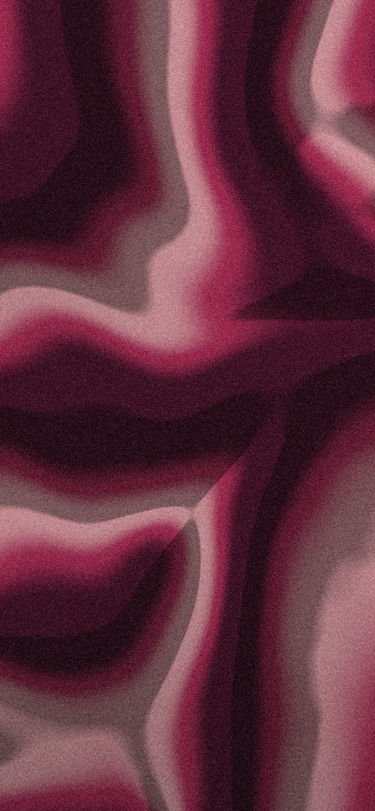
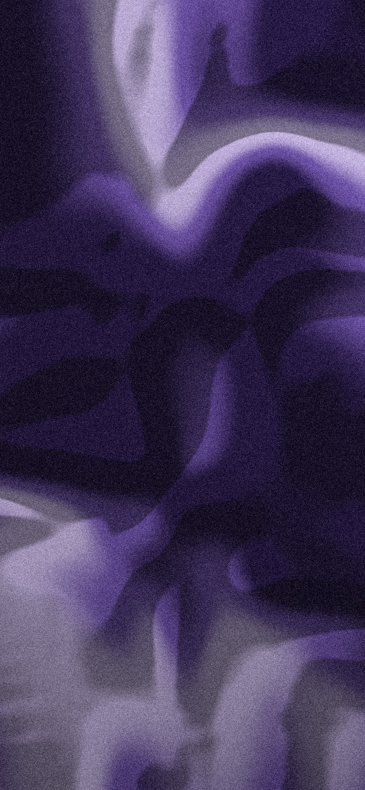
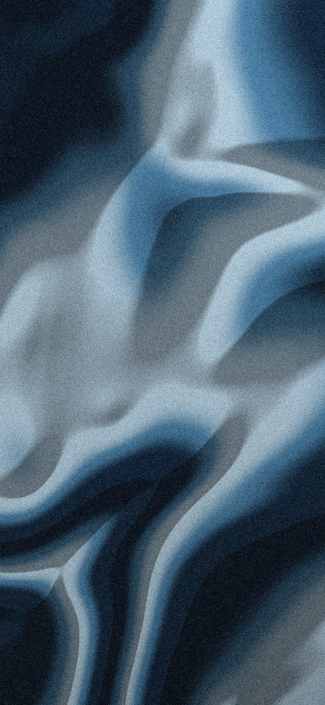
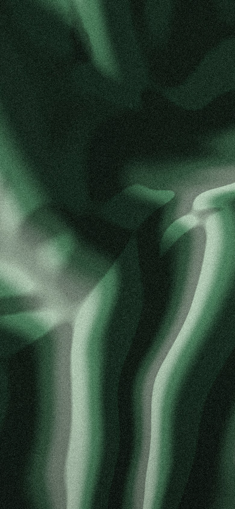
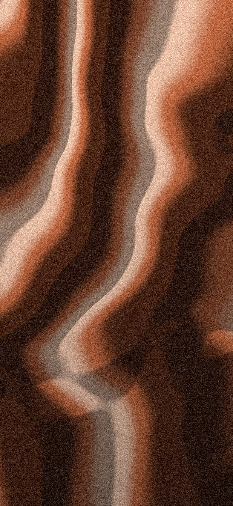
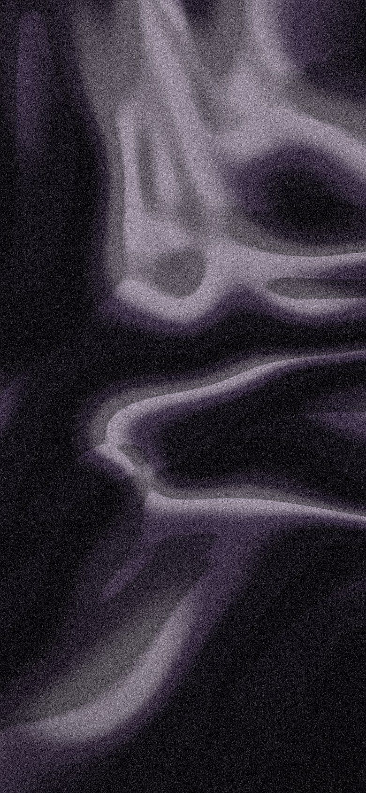

Native iOS and web · First run · revision 2 · synthetic data
First run: a mix before an account.
A new listener reaches a mix without signing in: they ask the DJ straight away (path A) or add their music first in three counted steps (path B), and sign-in is offered after the first mix, never before it. Revision 2 applies the founder's decisions of October 20: every first-run page now sits on its own generated background with cream text and paper pills; the cap is no longer drawn in the composer but pushes the sign-in page; the Keep this mix sheet holds one pill that opens sign-in, with no provider buttons; Step 1 gains its line. Copy is verbatim from the spec: docs/superpowers/specs/2026-10-20-first-run-flow-design.md. Nothing here is implemented.
PlannedEvery frame on this board is planned.
Decided 2026-10-20
- Merge into an existing account: mixes move, the existing library wins.
- Anonymous mix cap of 3 and 30-day retention of idle anonymous users.
- Anonymous user created lazily at the first server action, not at launch.
- The catalogue-seeded corpus program is not started now; the artists page is the floor and the refusal rate is read from
first_mix_refused.
- Mixes only. Album recommendations are a future feature.
- Provider buttons live only on the sign-in page, never in a sheet or the composer panel.
- First-run pages carry generated graphic backgrounds.
What remains is visual approval of this revision.
Backgrounds

Welcomeand prompt after sync

Who do you love?

Step 1 of 3

Step 2 of 3

Step 3 of 3every method

Sign-inand cap
Generated grainy silk marble, one prism hue per page, 780 x 1688 at 2x of the frame. Shipped as static assets and never drawn at runtime; the same in light and dark. A dark scrim over each image (darker at the top behind the counter, lightest mid-page, darker over the pills) keeps cream text at 4.5:1.
Path A · make a mix nowWelcome, then Who do you love?, then Mix, then the Keep this mix sheet. No counter.
Path B · add my music firstStep 1 of 3 Which do you use?, Step 2 of 3 How do you want to add it?, Step 3 of 3 the doing page, then the prompt page and path A's Mix.
Sign-inFrom the sheet, the You row or the cap: "Keep your mixes." From the welcome foot link: the existing page, unchanged. Provider buttons appear only here.
ReturningAny session, anonymous or not, skips first run and opens the shell.
1 · Path A: make a mix now
9:41
mixtape
What do you want to hear?
something for a rainy commute
or
9:41
mixtape
What do you want to hear?
something for a rainy commute, no talking
or
9:41
Who do you love?
Three artists is enough. The DJ borrows from the shared catalogue until your music is in.
First artist
Second artist
Third artist
9:41
Who do you love?
Three artists is enough. The DJ borrows from the shared catalogue until your music is in.
/me/artist-seeds (creating the anonymous user lazily) and then sends the prompt from A2.
9:41
Rainy commute
something for a rainy commute, no talking
DJThese picks come from the shared catalogue, not your own listening yet. Slow and warm to start, a little brighter by your stop.
Play nowCreate playlist
Paper UmbrellaThe Harmattan Hours
Northbound, LateIlse Okoro
CORPUS_NOTICE, unchanged); its wording is the model's own. Play now and Create playlist are the existing mix actions. Inside first run, back is the rewind glyph and returns to Welcome.
9:41
Rainy commute
something for a rainy commute, no talking
DJThese picks come from the shared catalogue, not your own listening yet. Slow and warm to start, a little brighter by your stop.
Play nowCreate playlist
Keep this mix.
Sign in and your mixes and music stay with you on any device.
9:41
Rainy commute
something for a rainy commute, no talking
DJI don't know those artists yet. Add your music, or name a few more.
Add my musicName a few more
resolvePoolMode returns insufficient_seeds and the DJ says so in its own voice. No queue, no mix actions, no sheet. Add my music opens path B step 1; Name a few more returns to Who do you love? with the chips kept. Funnel: first_mix_refused.
2 · Path B: add my music first
Only these pages carry the step counter and the progress line, which fills a third per step. The counter is decorative; the page title carries the step.
9:41
Step 1 of 3
Which do you use?
Mixes get better when the DJ knows your music.
9:41
Step 2 of 3
How do you want to add it?
9:41
Step 2 of 3
How do you want to add it?
Exportify brings your playlists and likes. The data export adds what you actually played.
9:41
Step 3 of 3
Syncing your library
612 songs so far
9:41
Step 3 of 3
Syncing your library
Sync stopped at 612 songs.
9:41
Step 3 of 3
Export from Exportify
- Open Exportify and connect Spotify.
- Choose Export All and save the ZIP as it is.
- Come back and choose the files. Mixtape will show what it found before importing.
9:41
Step 3 of 3
Request your data
- Open spotify.com/account/privacy and log in with the account that has your listening history. A laptop is easier than a phone for this part.
- Scroll to Download your data.
- Select Account data and Extended streaming history. Leave Technical log information unselected.
- Press Request data.
- Check your email. Spotify sends a confirmation message first. Open it and press Confirm. Nothing is prepared until you do, and this is the step most people miss.
- Wait. The two packages arrive as separate emails, each with a Download button, usually within days; the extended history can take up to 30. Each link expires after about two weeks, so download it when you see it.
- Save the ZIPs as they are. Don't unzip them.
spotifyRequestSteps. I've requested it records the request and continues to Who do you love?; the Home waiting row takes over when the files arrive. VoiceOver: "Step 3 of 3, Request your data".
9:41
mixtape
What do you want to hear?
1,284 songs in. Ask for anything.
3 · Sign-in, cap and returning
9:41
mixtape
Keep your mixes.
last used
9:41
mixtape
Keep your mixes.
That's three mixes on this device. Sign in to keep going, and to keep these.
anonymous_cap from POST /sessions, and the client reacts by pushing this page; nothing about the cap is drawn in the composer panel. Back returns to Home with the prompt kept in the field; the prompt is sent after sign-in. No last-used note here. VoiceOver: "Keep your mixes., heading".
9:41
You
Sign in to keep your mixes
What the DJ knows2 remembered preferences
Suggest mixes from my routines
Learning stays on this device's account only. Clear learned listening from What the DJ knows.
9:41
Home
Your mixes are in. This account already had a library, so we kept that one.
something for a rainy commute
Kitchen, early, coffee onRunning, long, no lyrics
merged: 'mixes_only': the approved compact toast with the prism bottom edge and the success mark, two lines because the sentence is long. It sits above the panel and dock and never covers them. Polite announcement. When merged: 'all' nothing is shown.
4 · Web
The same pages in a 420 px column over the session-painted plane. No sidebar until a session exists.
mixtape
mixtape
What do you want to hear?
or
AuthGate becomes FirstRun. The column is centred on the full gradient plane; Enter sends, as in the existing composer. The page title is "What do you want to hear?" and the anonymous session is created only when a prompt or seeds are first sent.
mixtape
Step 2 of 3
How do you want to add it?
Exportify brings your playlists and likes. The data export adds what you actually played.
mixtape
Step 1 of 3
Which do you use?
Mixes get better when the DJ knows your music.
5 · Themes and accessibility
9:41
mixtape
What do you want to hear?
or
9:41
Step 1 of 3
Which do you use?
Mixes get better when the DJ knows your music.
9:41
Step 2 of 3
How do you want to add it?
Exportify brings your playlists and likes. The data export adds what you actually played.
9:41
Step 3 of 3
Syncing your library
612 songs so far
9:41
Step 1 of 3
Which do you use?
Mixes get better when the DJ knows your music.
6 · Alternative considered, not recommended
9:41
mixtape
What do you want to hear?
7 · Coverage
Approval covers:
- iOS at 390 pt in light and dark, every state above: Welcome empty and typed, Who do you love? at zero and three artists, Mix, Keep this mix, Refusal, path B steps 1 to 3 for every method, sync in progress and failed, the prompt after sync.
- Sign-in from the sheet, the cap as the sign-in page, the anonymous You row and the merge notice.
- The six graphic backgrounds and their cream text, paper pills, outlined tape-shaped back button and scrim.
- Web wide (420 px column) and narrow (full width).
- Large text at 200%, reduced motion, reduced transparency.
Not covered:
- The interview: it stays where it is, offered from Home rows after the first mix.
- Library's own add flow beyond reusing these three pages with the same counter.
- Album recommendations (decision 5).
- Apple's MusicKit authorisation sheet, the existing Apple export instructions and the existing import review step, which are unchanged and drawn elsewhere.